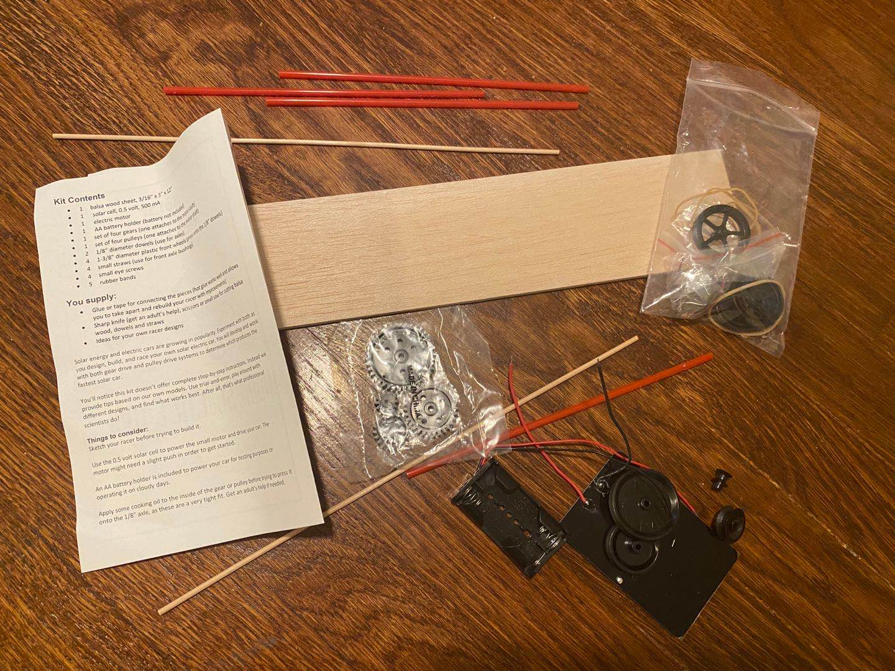
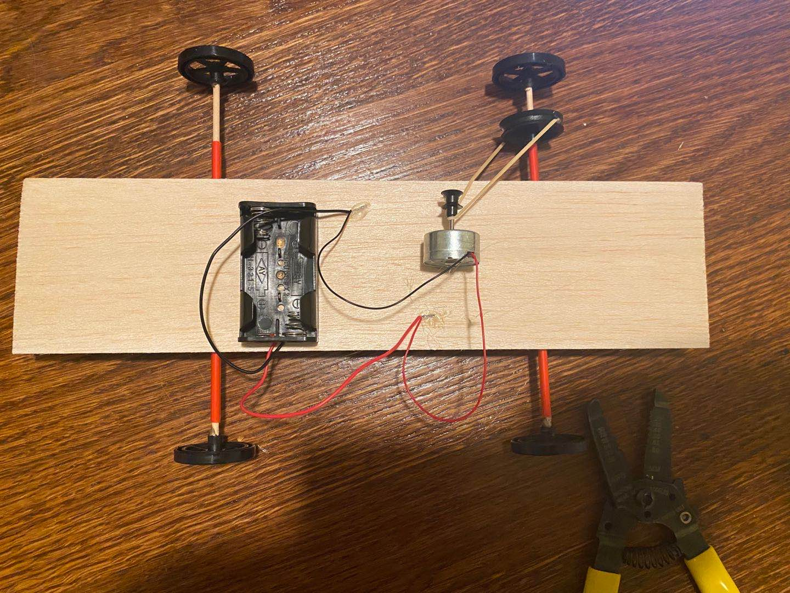
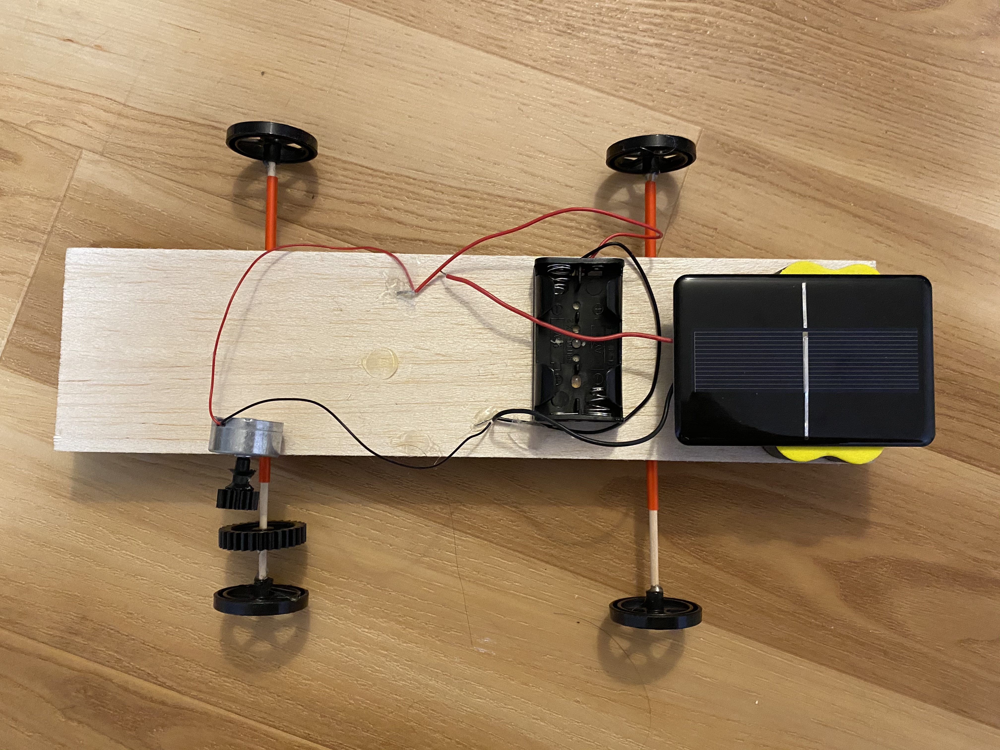

For this week, I created a solar car with the kit. I was kind of confused at the beginning because I've never made anything similar before, and the insturction in the kit didn;t porvide a lot of information. But I was able to figure it out at the end, and I was quite happy with the final result, as shown below.
I started of by gathering all the materials. I also prepared a few of my onw wheels and LEGO just in case. I then used the wood board, two wood sticks and the straws to create the base of the car. Hot glue gun was used to attached everything together. To make sure that the arrangement is correct, I went online to look for some picture as reference.
At first, I used the pulley method to let the motor dirve the wheel, which didn't worl out well. I think the problem was on the way I attached the rubber band. It was really hard to have it fixed in one place without delaying the rotation of the wheel. As a result, I chose to change the position of the motor and switch to the gears.The picture below are the setups for both methods, and only the second one worked out.
Because it was very rainy when I was doing the, I had to batteries to provide power instead using solar energy. Here's is a picture of my final assambly with the solar cell on.
